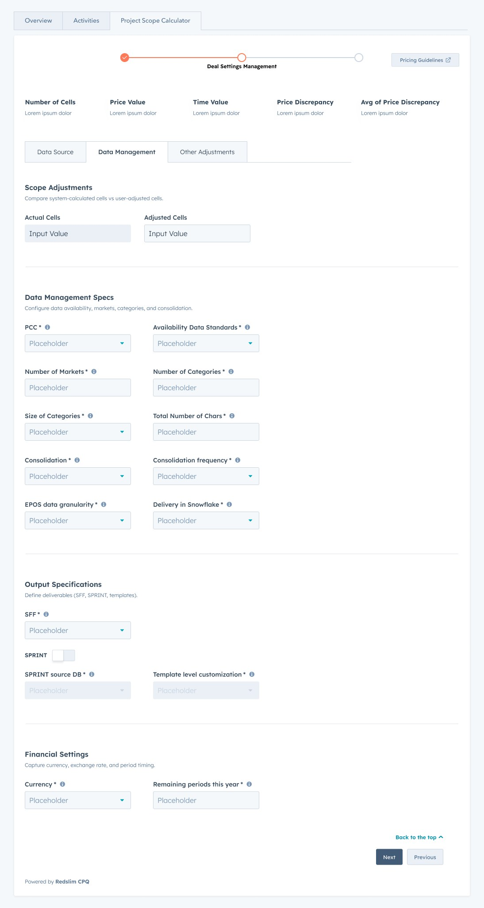
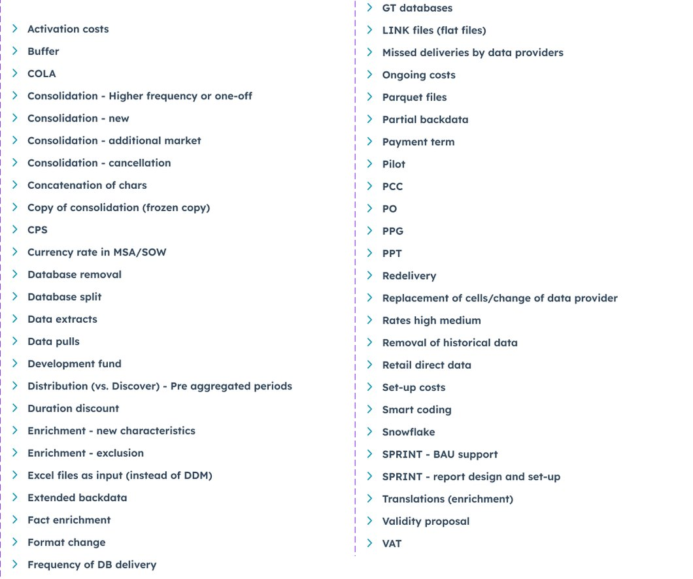
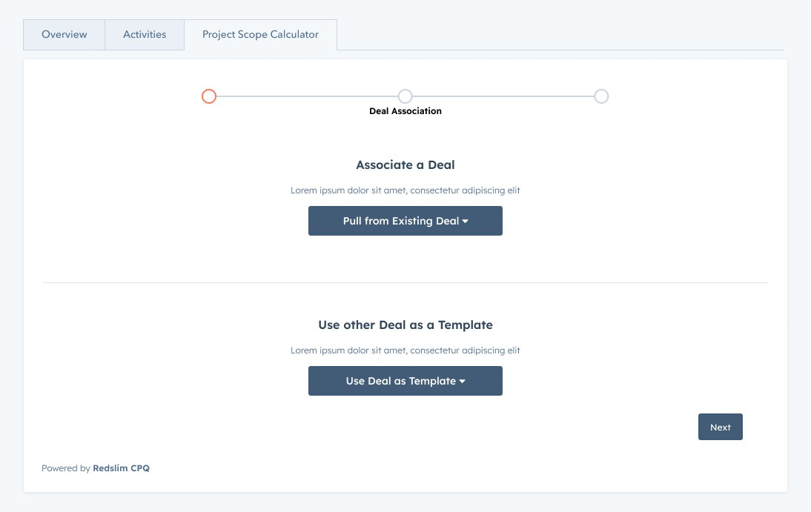
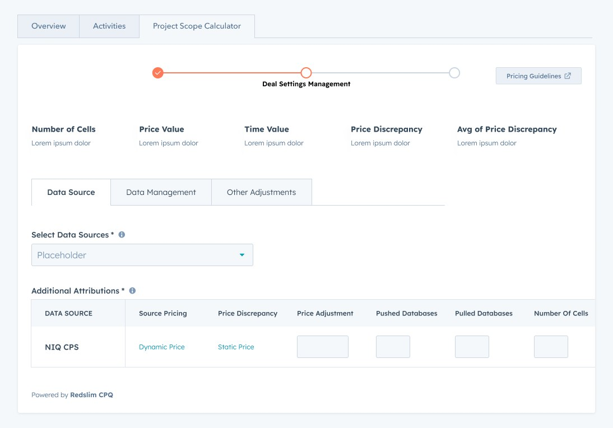
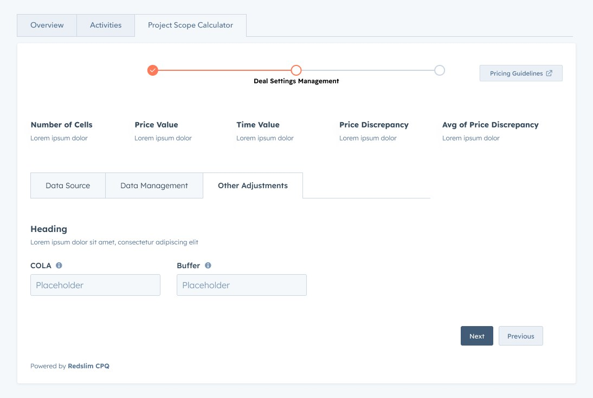
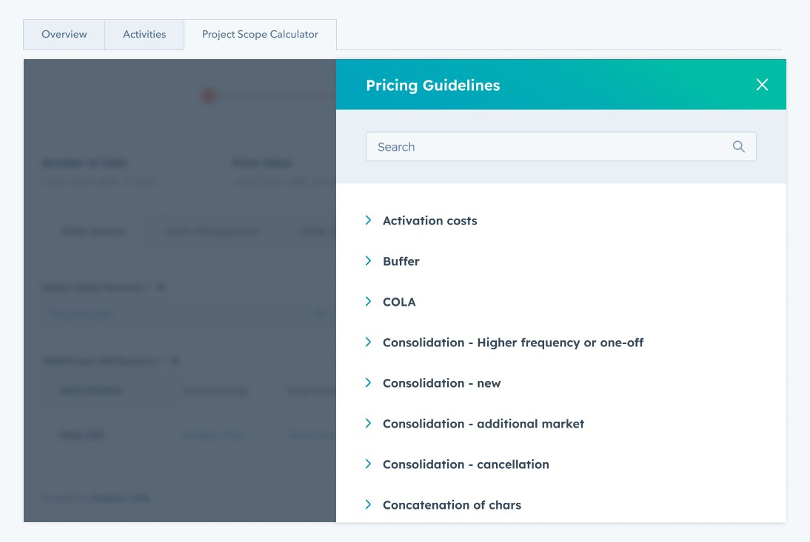
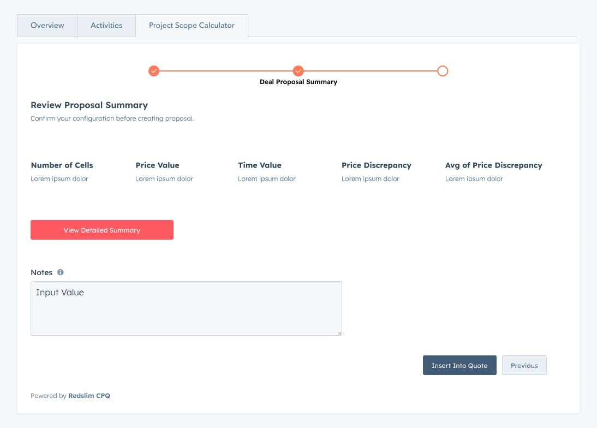
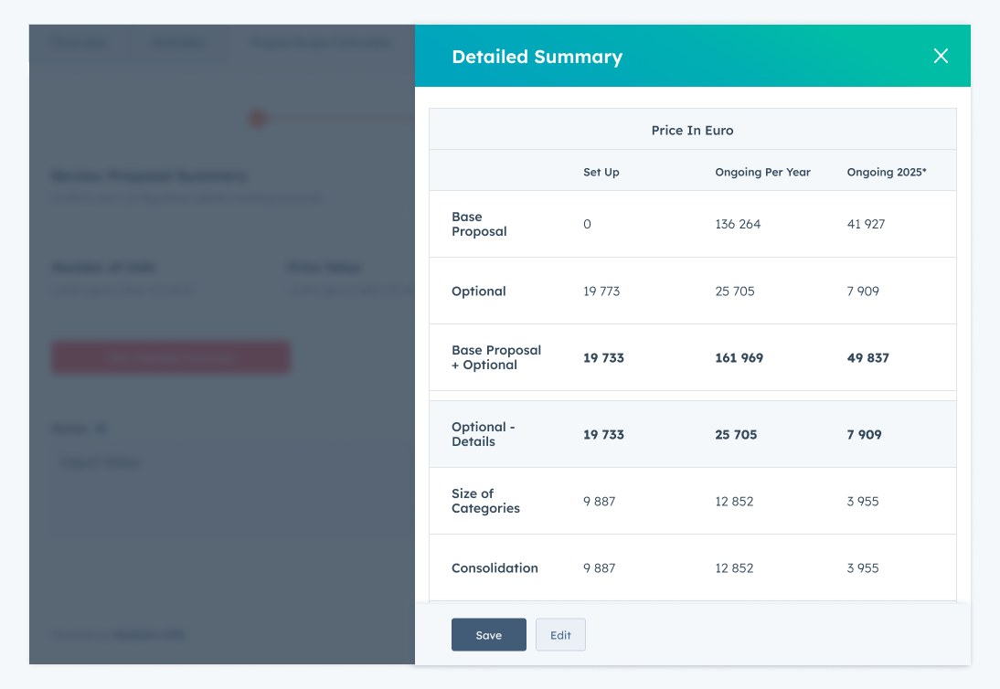

Proving a spreadsheet could become a product
Redslim harmonises retail and consumer panel data. Their commercial work was priced from a spreadsheet carrying 50 separate pricing rules, from activation costs and buffers to Snowflake delivery and backdata extensions. The question was not how to make that spreadsheet nicer. It was whether the whole thing could live inside the CRM as a real feature instead.
I designed it to find out. It worked, so it was built for the client and shipped.

Why this was a feasibility question, not a design brief
Spreadsheets survive in commercial teams because they are honest about complexity. Every rule, exception and rate sits in a cell somebody can see and argue with. The reason replacing one usually fails is that the replacement hides the logic, and the moment a salesperson cannot see why a number changed, they go back to the sheet.
So the question worth answering first was not what the interface should look like. It was whether HubSpot's own components, with no custom CSS available, could carry that much pricing logic without becoming unusable. If the answer was no, nobody should promise a client a tool.
Designing it was how we found out. That is a use of design I would argue for more often: not to decorate a decision already taken, but to establish whether the decision is available.
The mapping, which is the actual work
The spreadsheet's pricing rules were rebuilt as a variant driven component set. Each rule became its own component with a collapsed state and an expanded state, so the interface could hold all of them without showing all of them.
- 50pricing rules mapped out of the spreadsheet
- 3configuration steps, from data source to adjustments
- 2states per rule, collapsed and expanded
- 0lines of custom CSS available on the platform
They are specific and unglamorous, which is the point. Activation costs. Buffer. Cost of living adjustment. Set up costs and ongoing costs as separate rules. Duration discount. Payment term. Pilot. VAT. Consolidation priced four different ways depending on whether it is new, at higher frequency, for an additional market, or a cancellation. Extended backdata and partial backdata as distinct cases. Format change. Frequency of database delivery. Redelivery. Missed deliveries by data providers, which is a pricing rule because somebody has to absorb the cost when an upstream provider is late.

Nobody gets excited about a list like that. It is the entire reason the tool was trusted, because a rule that is not in the interface is a rule somebody keeps in a spreadsheet beside it.
What is deliberately not shown here
Each of those rows expands to show the guidance behind the rule, and that guidance is the client's rate card: euro set up costs, day count assumptions, percentage discounts, and internal notes on how to handle the commercial conversation. It also names their upstream data providers and discusses data quality problems with them.
None of that appears on this site and none of it will. The list of rule names demonstrates the scale of the mapping, which is the design work. The contents are the client's pricing, which is not mine to publish, and no permission to use my own work extends to publishing a client's rate card. If you want to see the expanded panel, ask me in an interview and I will describe how it behaves without reading you the numbers.
Where the count comes from
50 is the number of rows in that panel. It is not an estimate, and the image above is the evidence, so you can count it yourself.
Three decisions worth explaining
Start from an existing deal, not an empty form
Nobody scopes a data project from nothing. They scope the one in front of them by comparison with the last similar one. So the first step is not a form, it is a choice: pull from an existing deal, or use another deal as a template.

Keep the consequences visible at every step
Number of cells, price value, time value, price discrepancy, average price discrepancy. Those five sit above the stepper on every screen. This is the specific thing that decides whether a pricing tool replaces a spreadsheet or gets abandoned next to one, because the spreadsheet's real advantage is that you can see the effect of the cell you just changed.


Put the rules inside the tool, searchable
The guidelines governing all 50 rules lived in documents somebody had to go and find. Making them a searchable panel that opens over the calculator is the least visually interesting decision on this project and probably the most important, because a guideline you have to leave the tool to read is a guideline that gets guessed at.

Ending where the deal already lives
The last step summarises the configuration and inserts it into the quote. The detailed breakdown separates set up from ongoing per year and the year after, across base proposal, optional items, category size and consolidation, so whoever approves it can see which line drove the number rather than only the total.


The walkthrough
Why the video talks about it differently
The recording describes the tool in general terms rather than naming the client. It was made while the client build was still confidential, so the walkthrough presents the approach and the workflow without attributing it. The client version has since been built and shipped. I would rather explain that here than have you notice the mismatch and wonder about it.
What I did not do
I designed the interface, the flow and the way the pricing logic is presented. I did not build the pricing engine, the backend automation, the HubSpot integration, or the technical generation and transfer of line items into the quote. Those were development and integration work by other people.
What I will claim is narrower and, I think, more interesting: the pricing logic became legible to a salesperson inside the CRM, and the design established that it could be before anyone committed to building it.
What I would do differently
Three configuration steps was one too many. Data source, data management and other adjustments are three tabs because that is how the pricing model is organised internally, not how a salesperson thinks about a deal. Given the engagement again I would test collapsing adjustments into the data management step and see whether anybody missed it.
I would also have run the 50 rules past the commercial team as a flat list before designing the component set. I derived the structure from the spreadsheet, which was correct, but the spreadsheet's grouping reflected how the sheet had grown rather than how the rules relate.
Outcome
The design proved that spreadsheet based pricing could be mapped into a native HubSpot feature, and that proof is what turned an idea into a tool the client now uses.
There are no efficiency or revenue percentages on this page. I do not have measured ones for this tool, and published CPQ research would not be mine.